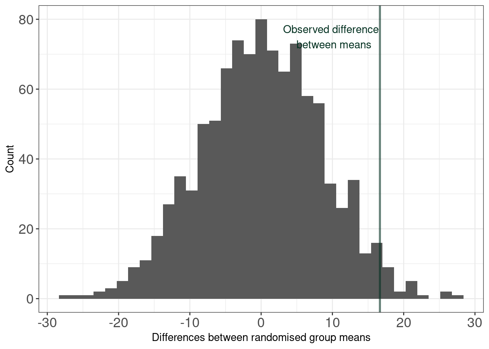

{kind=link}
| Group | Value |
|---|---|
| Blue | 7 |
| Blue | 6 |
| Blue | 4 |
| Blue | 2 |
| Blue | 2 |
| White | 5 |
| White | 4 |
| White | 6 |
| White | 11 |
| White | 3 |
Workshop timeline
10.30 am - 12:00 pm (90 mins total)
- 10.30–10.40 am Introduction and Welcome
- 10.40–11.10 am Experimental Design (Section 3)
- Group/individual activity (Section 3.1)
- 11.15–11.45 am Randomization (Section 5)
- Classwide activity (Section 5.1)
- Group/individual activity (Section 5.2)
- 11.45 am – 12 pm Discussion & Feedback (Section 6)
Useful links
Summary
This workshop requires your active involvement! The content and activities are based on material used in a second stage biostatistics course here at UoA. Our 90 min slot roughly covers two weeks worth of the content üò±üò± Bear with me, the aim is to give an overview not an in-depth lecture!!
Throughout this worksheet you’ll find a number of different callout boxes:
this box will contain the expected learning objectives and/or outcomes for the material
this box will contain some useful information
Experimental design
Objectives/Outcomes
- Define the objectives of an experiment
- Define the response variable of an experiment
- State the experimental factors of an experiment
- Identify nuisance factors that may induce variation in the experiment
Activity
Open Farm Rescue: Tomato Trials, choose your Farm Name and Begin. Explore the application and familiarise yourself with the scenario and backstory!
For the purposes of this activity, when you come to design your experiment only choose one variety of tomato and set only two treatments. Make sure to explore the greenhouse plots and the different natural conditions.
Note that one of your treatments could be the Control (i.e., 0% manure/ not applying anything to a plot).
FAQs
- Why are specific objectives important? Defining specific objectives direct you towards writing focused statements about the investigative questions you want your experiment to answer. The objective(s) are what it is you are aiming to accomplish in the experiment. The objective(s) should be written in terms of a specific verb that describes what you are doing (e.g., what you are hoping to measure/analyze/determine/test etc.).
- What is the response variable? The response (or dependent) variable is the focus of your experiment; it is the variable that you will measure to accomplish your objective. It should be meaningful (i.e., represent the objective) and measurable.
- Why list the experimental factors? Listing the experimental factors (or treatments or independent variables) you will study in your experiment helps to organise variables and work out how they may help to explain observed changes in your measurable response(s). It is important that the experimental factor can be controlled during and between experimental runs.
Run your experiment!
Verify if all plants survived or did some die before reaching maturity? If a plant died, what do you think may have caused this? Could this be treatment related, or just a random occurrence?
Run the in-app R code by hitting Run (this may take a while, but just wait for the plot)
Is there anything that needs to be corrected on your graph? Hint: check axis label spellings Can you correct the code and re-run it?
Download your data
Before moving on, please download your data as we will use this for the next section of the workshop.
Based on your results fill in the missing percentage!
Break
We’ll have a few mins break before this section, if you fancy another quick game give shady a go.
Randomization tests
Objectives/Outcomes
- Formulate a question/hypothesis to investigate based on the given data
- Write out the appropriate null and alternative hypothesis using statistical notation for a randomization test (given a test statistic)
- Carry out a randomization test using the code/procedure provided
- Correctly interpret and communicate a p-value in terms of a randomization test
The basic approach to a randomization test
- Choose a statistic to measure the effect in question (e.g., differences between group means).
- Calculate that test statistic on the observed data. Note this metric can be anything you wish.
-
Construct the sampling distribution that this statistic would have if the effect were not present in the population (i.e., the distribution under the Null hypothesis). For a chosen number of times:
- Shuffle the data labels.
- Calculate the test statistic for the reshuffled data and retain.
-
Find the location of your observed statistic in the sampling distribution. The location of the observed statistic in the sampling distribution is informative:
- If in the main body of the distribution, then the observed statistic could easily have occurred by chance.
- If in the tail of the distribution, then the observed statistic would rarely occur by chance, and there is evidence that something other than chance is operating.
- Calculate the proportion of times your reshuffled statistics equal or exceed the observed. This p-value is the probability that we observe a statistic at least as “extreme” as the one we observed.
- State the strength of evidence against the null on the basis of this probability.
Activity
We are going back to school and are going to swap some stickers!
The ten coloured (Blue or White) stickers I’m about to hand out each have a number stapled to them. These data are given below and are also in this Google Sheet
If we write \(\mu_\text{Blue}\) and \(\mu_\text{White}\) as the means of the Blue and White Groups respectively (statisticians love using Greek letters at any given opportunity) then we have
- \(\mu_\text{Blue}\) = 4.2,
- \(\mu_\text{White}\) = 5.8, and
- \(\mu_\text{Blue} - \mu_\text{White}\) = -1.6.
Take a note of these numbers these are the observed data!
I want those of you with stickers to separate the stickers from the numbers and swap your sticker with another sticker holder (keeping the number!). You may, or may not, now have a different coloured sticker.
After this iteration we’re going to update the Google Sheet by changing the Group labels (i.e., sticker colours).
We’ll do this a few more times… remembering to annotate your plot with the recalculated value of \(\mu_\text{Blue} - \mu_\text{White}\).
Because we don’t have all day I recalculated the statistic \(\mu_\text{Blue} - \mu_\text{White}\) 1000 times for the reshuffled labels and plotted this for you below. Reading this plot do your answers above differ?
Test-statistic distribution under the NULL
We’re now going to formalise things a bit more!
Note that the number of times out of the 1000 iterations that
- a value <= -1.6 was obtained was 249, and
- a value >= 1.6 was obtained was 235.
The hypothesis test you’ve just carried out can be formalised as
- Test statistic: The difference between the mean of the Blue group and the mean of the White group
- In maths syntax, \(\mu_\text{Blue} - \mu_\text{White}\)
- NULL hypothesis: The mean of the Blue group is the same as the White group
- In maths syntax, \(H_0: \mu_\text{Blue} = \mu_\text{White}\) or \(H_0: \mu_\text{Blue} - \mu_\text{White} = 0\)
- Alternative hypothesis: The mean of the Blue group is not the same as the White group
- In maths syntax, \(H_0: \mu_\text{Blue} \neq \mu_\text{White}\) or \(H_0: \mu_\text{Blue} - \mu_\text{White} \neq 0\)
The proportion of times a value as least as extreme as the magnitude of the test statistic was observed gives us information/evidence about whether the NULL hypothesis is plausible. We’re not going to go into too much detail here, but it can be interpreted as a probability (in stats terminology it’s called a p-value1).
Script
This activity assumes some familiarity with R. If you are not familiar with R I would still encourage you to give this a go, either directly in the Farm Rescue: Tomato Trials app or most likely the easiest via Posit Cloud. If you’re not keen then feel free to watch someone who is and follow along the code below and/or see if you can figure out what is going on.
Using your data from the experimental design activity (Section 3.1) have a go running the R code below.
Note that the example below is executed using some example data from my run of the experiment; feel free to use this output to answer the questions posed.
## required package(s)
library(tidyverse) ##install.packages("tidyverse") # to install
## assumes your data is downloaded into a file called results.csv
## could use 'Import Dataset" tab
results <- read.csv('results.csv')
## example data
results row col plant recipe percent_manure survived fruit_weight
1 1 1 cherry 25% manure 25 yes 47.05592
2 3 1 cherry 60% manure 60 yes 60.35559
3 4 1 cherry 25% manure 25 yes 42.03602
4 6 1 cherry 25% manure 25 yes 36.80037
5 7 1 cherry 60% manure 60 yes 41.20610
6 1 2 cherry 60% manure 60 yes 74.73517
7 2 2 cherry 60% manure 60 yes 67.35283
8 3 2 cherry 25% manure 25 yes 53.75131
9 6 2 cherry 60% manure 60 yes 51.44552
10 7 2 cherry 25% manure 25 yes 37.57966
11 1 3 cherry 25% manure 25 yes 63.71887
12 2 3 cherry 25% manure 25 yes 64.99296
13 3 3 cherry 60% manure 60 yes 78.11955
14 4 3 cherry 60% manure 60 yes 68.56110
15 6 3 cherry 25% manure 25 yes 45.82823
16 7 3 cherry 60% manure 60 yes 52.28843
17 2 5 cherry 25% manure 25 yes 79.12103
18 3 5 cherry 25% manure 25 yes 74.96625
19 5 5 cherry 60% manure 60 yes 83.40485
20 6 5 cherry 25% manure 25 yes 56.96398
21 1 6 cherry 25% manure 25 yes 98.53688
22 2 6 cherry 60% manure 60 yes 116.44931
23 3 6 cherry 60% manure 60 yes 105.81186
24 5 6 cherry 25% manure 25 yes 71.50998
25 6 6 cherry 60% manure 60 yes 79.81267
26 7 6 cherry 60% manure 60 yes 67.78721
27 1 7 cherry 60% manure 60 yes 136.19697
28 3 7 cherry 25% manure 25 yes 92.72198
29 5 7 cherry 60% manure 60 yes 98.67417
30 6 7 cherry 25% manure 25 yes 66.64357## plotting code matches app
ggplot(data = results, aes(x = recipe, y = fruit_weight)) +
geom_violin() + geom_dotplot(binaxis = "y", method = "histodot") +
theme_bw() + xlab("Fertilizer Recipe") + ylab("Fruit Weight (g/m^2)")## Do we think there's a difference in treatment means?
##---------------------------------##
##----OBSERVED STATISTIC-----------##
##---------------------------------##
## Below is the calculated difference in group means given the sample
diff_in_means <- results %>%
group_by(recipe) %>% summarise(mean = mean(fruit_weight)) %>%
summarise(diff = diff(mean)) %>% as.numeric()
diff_in_means[1] 16.66495##---------------------------------##
##----RANDOMIZATION LOOP-----------##
##---------------------------------##
nreps <- 1000 ## number of times to iterate
## initiate results vector
randomisation_difference_mean <- numeric(nreps)
for (i in 1:nreps) {
dat <- data.frame(value = results$fruit_weight)
dat$random_labels <- sample(results$recipe, replace = FALSE)
randomisation_difference_mean[i] <- dat %>%
group_by(random_labels) %>% summarise(mean = mean(value)) %>%
summarise(diff = diff(mean)) %>% as.numeric()
}
## store results in a data frame
results <- data.frame(randomisation_difference_mean = randomisation_difference_mean)
##---------------------------------##
##----SAMPLING DISTRIBUTION--------##
##---------------------------------##
ggplot(results, aes(x = randomisation_difference_mean)) +
geom_histogram(bins = 35) +
theme_bw() + theme(axis.text = element_text(size = 14)) +
ylab("Count") + xlab("Differences between randomised group means") +
geom_vline(xintercept = diff_in_means, col = "#023020", size = 1,alpha = 0.6) +
annotate(geom = 'text', label = "Observed difference \n between means" ,
x = 10, y = 75, color = "#023020")
## Do we think there's a difference in treatment means now?
## What do you think our strength of evidence is against the NULL hypothesis?
##---------------------------------##
##----P-VALUE----------------------##
##---------------------------------##
## How many randomized differences in means are as least as extreme as the one we observed
## absolute value as we are dealing with two tailed test
n_exceed <- sum(abs(results$randomisation_difference_mean) >= abs(diff_in_means))
n_exceed/nreps[1] 0.049
P-values
In summary, p-values can indicate how incompatible the data are with a specified statistical model; they do not measure the probability that the studied hypothesis is true, or the probability that the data were produced by random chance alone.
Note that a p-value does not measure the size of an effect or the importance of a result and by itself it does not provide a good measure of evidence regarding a model or hypothesis. Note also, that a substantial evidence of a difference does not equate to evidence of a substantial difference! Any scientific conclusions and business or policy decisions should not be based only on whether a p-value passes a specific threshold as proper inference requires full reporting and transparency.
Remember that statistical significance does not imply practical significance, and that statistical significance says nothing about the size of treatment differences. To estimate the sizes of differences you need confidence intervals (a whole other topic)!
Some p-value threshold recursive FAQs…2
| Question | Answer |
|---|---|
| Why do so many colleges and grad schools teach p-val=0.05? | Because that’s still what the scientific community and journal editors use. BUT IT SHOULDN’T BE |
| Why do so many people still use p-val=0.05? | Because that’s what they were rote taught in college or grad school. BUT THEY SHOULDN’T BE |
Feedback
I would love any feedback/suggestions/questions!! Feel free to share your thoughts out loud or write them on the board (I will be photographing these at the end of the workshop), you are of course also more than welcome to contact me via c.jonestodd@auckland.ac.nz.
Things I’d particularly like to hear your thoughts on
- The experimental design app; did you find any aspects underexplained or confusing?
- Are there additional features or tools you’d like to see in the software?
- Beyond the Thrive/Survive/Die in-game feedback what else might you like to see?
- What modifications would you make for different learning stages etc.?
- How might you scale/modify the randomization activity for different learning stages etc.?
Footnotes
Recommended reading The ASA Statement on p-Values: Context, Process, and Purpose↩︎
Again, read The ASA Statement on p-Values: Context, Process, and Purpose!↩︎